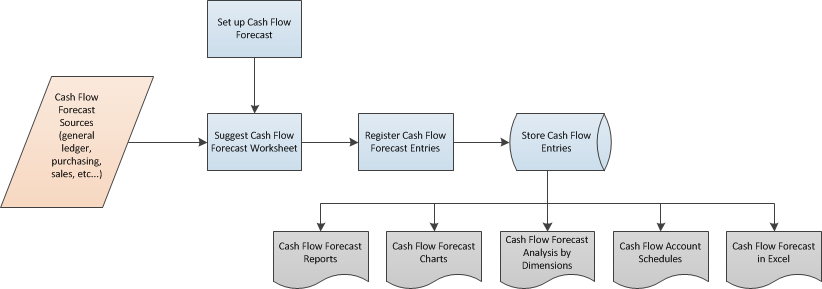

Cashflow – Übersicht
Das Verständnis von Geldein- und -ausflüssen ist der Schlüssel zum Erfolg eines Unternehmens. Sie können Cashflow verwenden, um eine kurzfristige Planung einfach zu erstellen, die voraussagt, wie und wann Ihr Unternehmen Geld erhält oder auszahlt. Es ist wichtig, zu wissen, dass Ihr Unternehmen genügend Bargeld hat, um Kreditoren und Ausgaben zu bezahlen, wenn sie fällig werden.
Definition von Cashflow
Der Begriff Cashflow wird verwendet, um Zahlungseingänge minus der Barzahlungen über eine ausgewählte Periode festzulegen. Es handelt sich um eine Schätzung des Geldbetrags, den Ihr Geschäft erhält und ausgibt, und er enthält alle Ihr prognostizierten Einnahmen und Ausgaben.
Arbeiten Sie mit Cashflow
Die folgende Abbildung zeigt eine Übersicht für die Arbeit mit dem Cashflow.

Sie richten eine Cashflowplanung ein.
Sie erhalten Cashflowplanungsquellen aus den folgenden Bereichen:
- Sachkonto - Informationen zu den liquiden Mitteln und den budgetierten Einnahmen und Ausgaben Ihres Mandanten.
- Einkauf - Informationen zu den aktuellen Verbindlichkeiten und geplanten Forderungen aus offenen Bestellungen.
- Einkauf - Informationen zu den aktuellen Forderungen und geplanten Eingängen aus offenen Verkaufsbestellungen.
- Service - Informationen zu offenen Serviceaufträgen.
- Anlagen - Informationen zum geplanten Abgang und budgetierten Einkauf von Anlagen.
- Neutrale Einnahmen und Ausgaben - Verwalten Sie neutrale Einnahmen und Ausgaben, und schließen Sie diese in die Cashflowplanung ein.
- Sie verwenden einene Stapelverarbeitung, um Informationen aus den Bereichen Sachposten, Verkauf, Einkauf, Service und Anlagen in das Arbeitsblatt zu übertragen. Dann erfassen Sie Vorschlagszeilen, um eine Cashflowplanung zu erstellen.
- Sie verwenden verschiedene Seiten, Berichte und Diagramme, um eine Cashflowplanung zu analysieren und zu drucken, die mit den Verfügbarkeits- und Zeitachsenübersichten verknüpft ist.
Cashflowplanung erstellen
Auf Grundlage der erfassten Vorschlagszeilen können Sie eine Cashflowplanung in regelmäßigen Abständen erstellen. Das folgende Layout ist ein häufig für eine Cashflowplanung verwendetes Layout. Das Layout hat drei Abschnitte:
- Zahlungseingänge
- Barausgaben
- Netto-Cashflow oder Barbestand
Zahlungseingänge liefern Details der Erträge, die das Geschäft erhält.
gesamte Zahlungseingänge = Forderungen + offene Verkaufsaufträge + offene Serviceaufträge + Anlagenverkäufe + neutrale Einnahmen + geplante Einnahmen
Hinweis
Neutrale Einnahmen können Mieteinnahmen, Zinsen aus Vermögenswerten oder neues privates Kapital sein. Sie können neutrale Einnahmen für einen Zeitraum planen und in der Berechnung der Cashflowplanung verwenden.
Barausgaben liefern Details der Zahlungen, die durch das Unternehmen getätigt werden.
gesamte Barausgaben = Verbindlichkeiten + offene Einkaufsbestellungen + Anlageinvestition + neutrale Ausgaben + geplante Ausgaben
Hinweis
Neutrale Ausgaben können Gehälter, Habenzinsen oder private Verbräuche sein. Sie können neutrale Ausgaben für einen Zeitraum planen und in der Berechnung der Cashflowplanung verwenden.
Netto-Cashflow oder Barbestand wird als Gesamteinnahmen minus kumulierte Auszahlungen am Ende jeder Periode berechnet.
Netto-Cashflow = gesamte Zahlungseingänge – gesamte Barausgaben + liquide Mittel
Sie können die Planung als internes Managemententscheidungstool verwenden, das Ihnen dabei hilft, im Voraus zu planen und wichtige strategische Entscheidungen über den Betrieb des Geschäftes zu treffen.
Siehe auch
Cashflow Analyse festlegen
Cashflow analysieren
Prognostizieren Sie Ihren Cashflow in Dynamics 365 Business Central
Einrichten von Cashflow-Planungen mit Azure AI in Dynamics 365 Business Central
Kostenlose E-Learning-Module für Business Central finden Sie hier